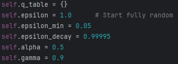
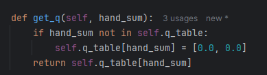
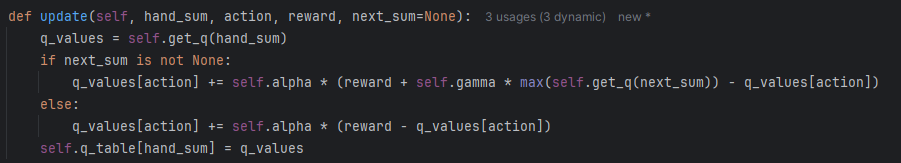
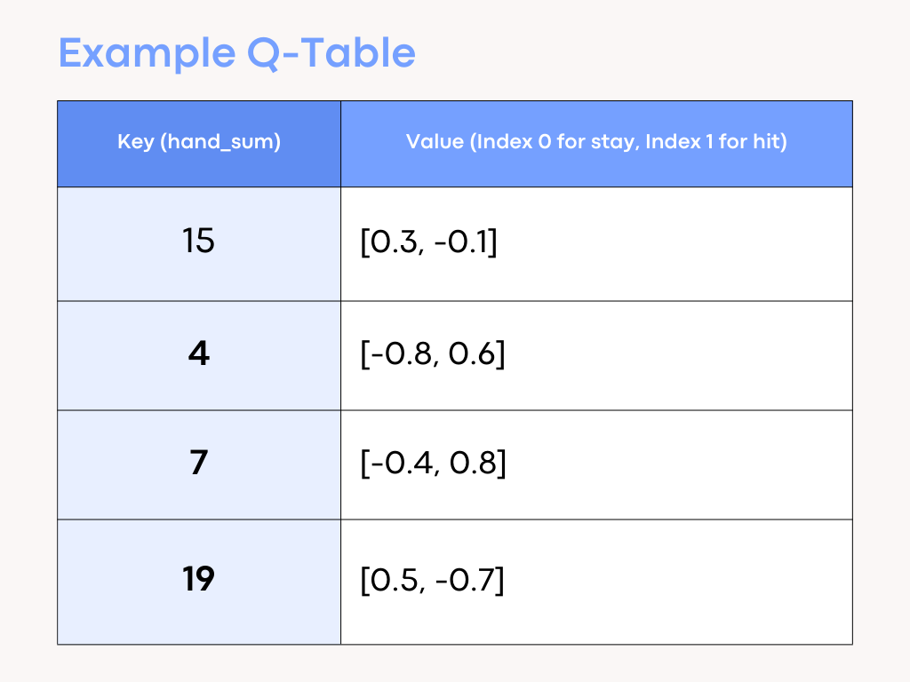
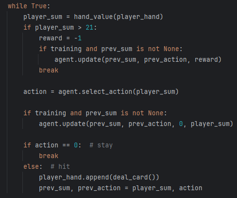
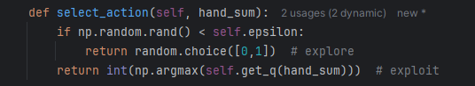

Exploring algorithms and AI concepts
Research on reinforcement learning with Q-Learning. I’ll share my blackjack agent experiments and future improvements.
Read MoreHello everyone, I created a Blackjack RL AI that learns to play a basic variation of blackjack through trial and error using Q learning. I wanted to document how it works as a way of reinforcing what I learned and help you understand how Q learning works too. Don’t mind the informal nature of this paper, I wanted to make sure that you understand it.
Ok so let’s get into it! First of all, what is Q-learning??? Well, to put it simply, it is a way for an agent to learn the best actions by trying things out and recording how good these actions were in a Q-Table. A Q-Table is just a dictionary that stores how good each choice is for every situation/state it can be in.
Now that we know what Q learning is, how do we make a basic blackjack AI? Before we start, we must understand what variables we need to create and what they do.
Okay, so now we know what each variable is, let's carry on.
 Above are the next two functions that I wrote in the class BlackjackAgent. First of all, to really convey how this agent works, let me show you what the Q table would look like after the AI plays a couple rounds of blackjack.
As you can see, if its hand is 15, it already knows that it is slightly better to stay than to hit.
Let’s now go through the update function to see how it works. First of all, update will be called after the agent has hit or stayed. For the purpose of this, let’s say that the agent stayed on a hand sum of 15 and won. Update is called and the parameters are hand_sum = 15, action = 0 (stay), reward = 1 (win). First, the function gets the q values of the hand sum 15. It does this by calling the get_q function. All this does is return the q values of a certain hand sum and, if the hand sum is not present in the q table, it just adds it.
So now the value q_values = [0.3, -0.1] as shown by the table above. If the value of next_sum is not specified when update is called, it automatically gives it the value None. So now q_values[action] = q_values[0] = 0.3. q_values[0] will now be updated to 0.3 + 0.5 * (1-0.3) = 0.65. So, as you can see, the stay q value of the hand sum 15 increases, telling the agent it is better to stay when it has the value of 15 present. The value alpha here is 0.5, but if the value was higher the q_value[action] will be updated to a higher value, whereas if the value of alpha was lower it will updated to a lower value. Therfore alpha practically decides how quick the agent can learn.
Now you might be wondering, what is next_sum and when would it not be None? Well, next_sum just tells us whether the game is still going on, like when the agent hits, we still need to update the q table, but the game is still going on. Now let’s walk through what would happen if the agent decided to hit on a 7.
Above is the block of code used to train the agent. I thought it would be good for you to see this to understand how it works. Let’s say the agent got dealt a 7, so player_sum = 7. Currently prev_sum and prev_action are None. We use prev_sum and prev_action because we update the Q-value of the previous state after seeing the next card. So, first of all, an action is decided using the select_action function. I will get into that later as that is how the agent exploits. The action is 1 (hit). A card is added to the player’s hand and prev_sum and prev_action become equal to the player_sum and the action.
Now as this is a while loop, we go back to the top. The player_sum is recalculated as a new card is added. If the player_sum is greater than 21, then a reward of -1 is given and the Q table is updated. For this example, 8 is added to the agent’s hand, so its player_sum is 15. Since prev_sum is not None, the q table is updated. The parameters given this time to update are hand_sum = 7, action = 1, reward = 0, next_sum = 15. The reward is 0 as the agent hit.
The Q-table is updated using the Temporal Difference (TD) learning rule, which uses the Bellman equation as the target. This means the agent adjusts its current guess toward the expected future reward. The difference between this equation and the one we previously used is the use of gamma, or the agent’s “patience,” which makes it care about the future reward as well. Now let’s walk through it together. First, the q values of the hand sum 7 are retrieved, which are [-0.4, 0.8]. As next_sum is not None, we go into the TD equation. q_values[action] = q_values[1] = 0.8. q_values[1] then gets updated to 0.8 + (0.5 * (0 + 0.9 * 0.3 – 0.8)) = 0.535. So, the q value for hit on the hand sum 7 goes from 0.8 to 0.535.
Now this is weird, isn’t it, as we as humans know that you should always hit on a 7, yet the q value for hitting decreases. Even though hitting led to 15 (which might seem good), the Q-value decreases slightly because the best Q-value of the next state (0.3) is less than the current guess (0.8). The agent is gradually learning the true expected value of hitting on 7. In simple terms, the agent thought hitting 7 was very good (0.8), but after seeing what actually happens next (best future reward = 0.3), it realizes hitting isn’t as great as it thought. So, it adjusts its Q-value downward.
Finally, let’s get into one of my favourite aspects of the project. How does the agent exploit??? As in, how does it use the q table to its advantage after playing the game so many times? The answer is quite simple, but I thought it was really cool.
Above is the block of code used by the agent to decide whether to hit or stay. This is where the value of epsilon is very important. Initially, our value of epsilon was quite high at a value of 1. Therefore, the agent will literally just make random choices at first, expanding its q table and knowledge. As the epsilon value decreases due to us decaying it after each game, the agent starts to exploit. By the way, this is why we decay the epsilon values, so that the agent slowly gets smarter.
As you know, the q table stores how good it is to hit or stay on a certain hand. Let’s use another example. Say that the agent gets dealt a 19, and the q table is the same as the one above. So, the q values of 19 are [0.5, -0.7]. The select_action function will return the index with the highest value. So, in this example it will return index 0 as 0.5 > -0.7, and as we know 0 is stay and 1 is hit, so the agent will stay.
This fascinated me as it was a simple way of exploiting the information gained after just playing the game a lot of times.
Summary:
After creating this simple agent, I trained it using around 100,000 episodes. You could clearly see it getting better and making smarter decisions every 10,000 episodes. After this, I then started to look into computer vision and machine learning models. I ended up finding a playing card recognition model online and training it myself on my computer, which took 8 hours. I was then able to place cards in front of my webcam, and the agent could play, which was quite surreal.